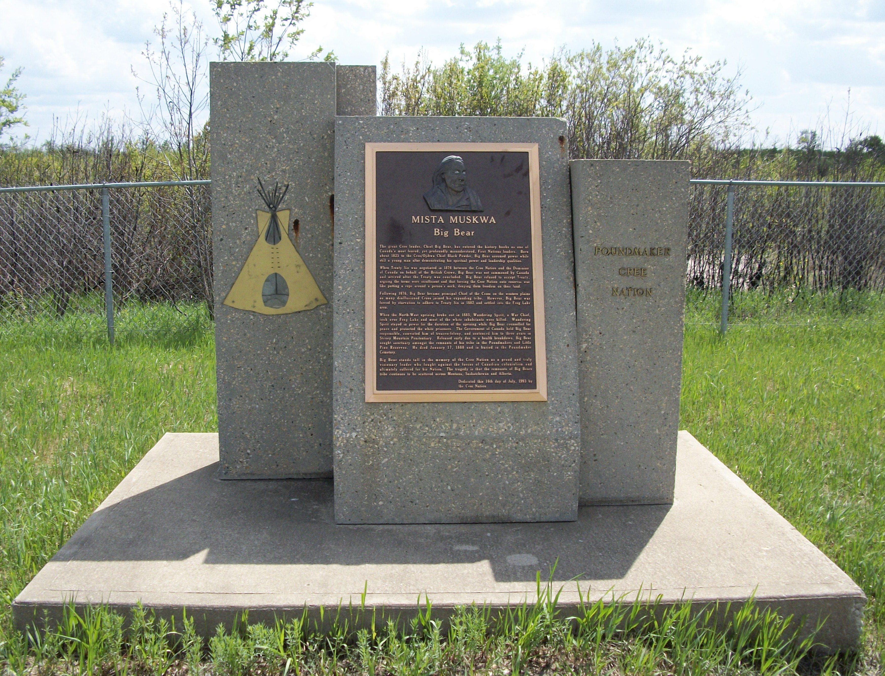

Mista Muskwa (Big Bear)
|  |
|
Mista Muskwa (Big Bear) monument on the |
The following is the inscription on the Big Bear monument at Poundmaker First Nation:
"The Great Cree leader, Chief Big Bear has entered the history books as one of Canada’s most feared, yet profoundly misunderstood, First Nations Leader. Born about 1825 to the Cree/Ojibwa Chief Black Powder, Big Bear assumed power while still a young man after demonstrating his spiritual power and leadership qualities.
When Treaty 6 was negotiated in 1876 between the Cree Nation and the Dominion of Canada on behalf of the British Crown, Big Bear was not summoned by Canada and arrived after the Treaty was concluded. Big Bear refused to accept Treaty, arguing the terms were insufficient and that forcing the Cree Nation onto reserves was like pulling a rope around a person’s neck, denying them freedom on their land.
Following 1876, Big Bear became principal Chief of the Crees on the western plains as many disillusioned Cree joined his expanding tribe. However, Big Bear was forced by starvation to adhere to Treaty 6 in 1882 and settled into the Frog Lake area.
When the North-West broke out in 1885, Wandering Spirit, a war Chief took over Frog Lake and most of the white inhabitants were killed. Wandering Spirit stayed in power for the duration of the uprising while Big Bear counselled for peace and protecting the white prisoners. The Government of Canada held Big Bear responsible, convicted him of treason-felony, and sentenced him to three years in Stony Mountain Penitentiary. Released early due to a health breakdown, Big Bear sought sanctuary amongst the remnants of his tribe of the Poundmakers and Little Pine Reserve. He died January 17, 1888 and is buried in the Poundmaker cemetery.
Big Bear stands tall in the memory of the Cree Nation as a proud and truly visionary leader who fought against the forces of Canadian colonialism and ultimately suffered for his Nation. The tragedy is that the remnants of Big Bear’s tribe continue to be scattered across Montana, Saskatchewan, and Alberta. (Dedicated this 16th day of July 1993 by the Cree Nation)"